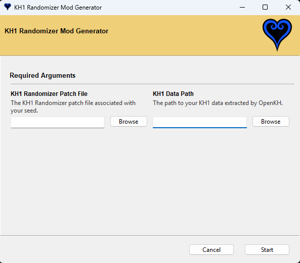
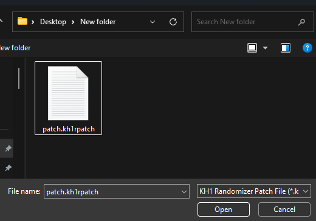
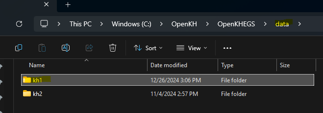
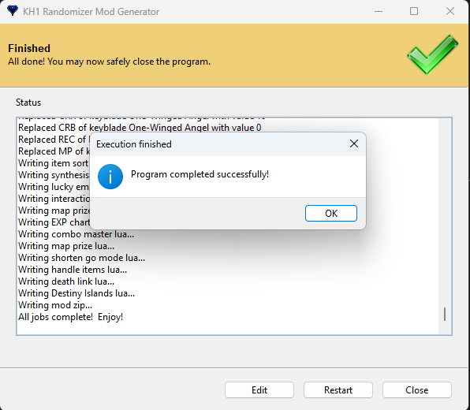

In your KHFM Randomizer Software folder, find "mod_generator.exe" and open it.
You should see the following screen prompting you for the patch file and your OpenKH KH1 extracted data path.

Point out your patch file from generation.

Point out your KH1 extracted data path. Usually this is a folder named "kh1" in your OpenKH path inside the "data" folder:

After clicking "Start", you should see the following window, as well as some text output that should describe the mod creation process.

Once complete, find your new mod zip in your KHFM Randomizer Software folder under "/Output/".

Next Step: Installing the Mod